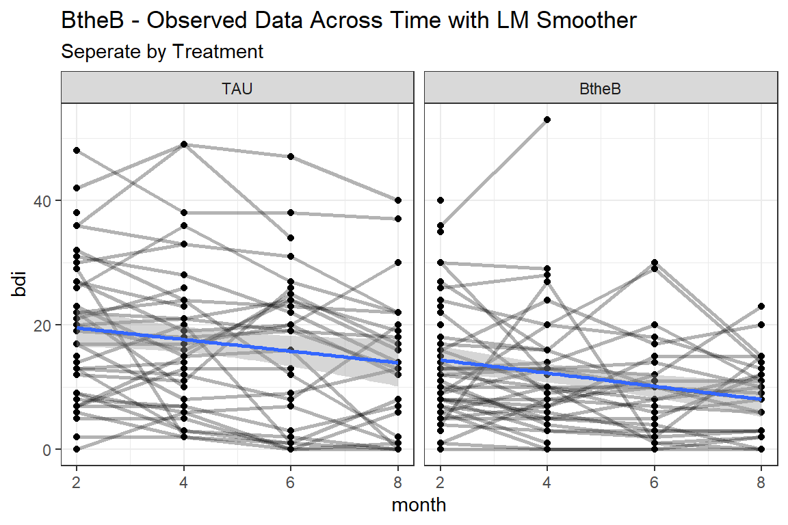
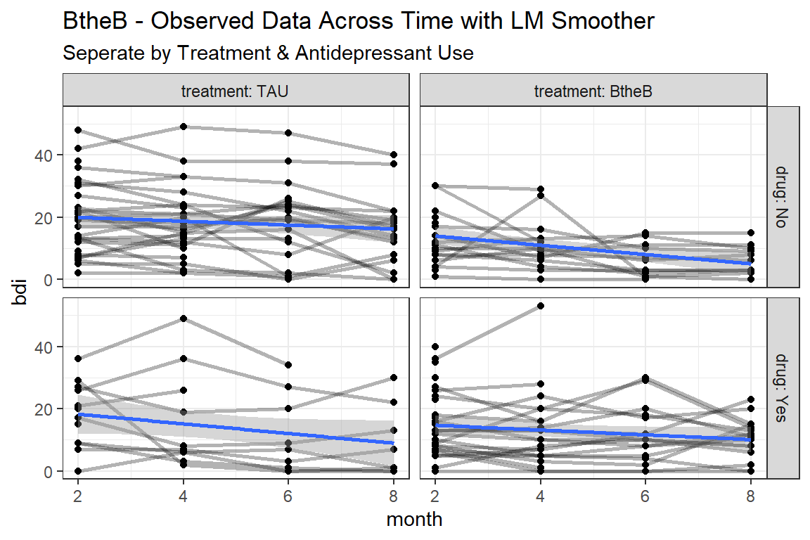

13 GEE, Binary Outcome: Respiratory Illness
13.1 Packages
13.1.1 CRAN
library(tidyverse) # all things tidy
library(pander) # nice looking genderal tabulations
library(furniture) # nice table1() descriptives
library(texreg) # Convert Regression Output to LaTeX or HTML Tables
library(psych) # contains some useful functions, like headTail
library(lme4) # Linear, generalized linear, & nonlinear mixed models
library(corrplot) # Vizualize correlation matrix
library(gee) # Genderalized Estimation Equation Solver
library(geepack) # Genderalized Estimation Equation Package
library(MuMIn) # Multi-Model Inference (caluclate QIC)
library(HSAUR) # package with the dataset13.1.2 GitHub
Helper extract functions for exponentiating parameters form generalized regression models within a texreg table of model parameters.
13.2 Prepare and get to know the dataset
13.2.1 Read in the data
This data set is in the HSAUR package.
In each of two centres, eligible patients were randomly assigned to active treatment or placebo. During the treatment, the respiratory status (categorised poor or good) was determined at each of four, monthly visits. The trial recruited 111 participants (54 in the active group, 57 in the placebo group) and there were no missing data for either the responses or the covariates. The question of interest is to assess whether the treatment is effective and to estimate its effect.
Note that the data (555 observations on the following 7 variables) are in long form, i.e, repeated measurments are stored as additional rows in the data frame.
Indicators
subjectthe patient ID, a factor with levels 1 to 111centrethe study center, a factor with levels 1 and 2
monththe month, each patient was examined at months 0, 1, 2, 3 and 4
Outcome or dependent variable
statusthe respiratory status (response variable), a factor with levels poor and good
Main predictor or independent variable of interest
treatmentthe treatment arm, a factor with levels placebo and treatment
Time-invariant Covariates
sexa factor with levels female and male
agethe age of the patient
'data.frame': 555 obs. of 7 variables:
$ centre : Factor w/ 2 levels "1","2": 1 1 1 1 1 1 1 1 1 1 ...
$ treatment: Factor w/ 2 levels "placebo","treatment": 1 1 1 1 1 1 1 1 1 1 ...
$ sex : Factor w/ 2 levels "female","male": 1 1 1 1 1 1 1 1 1 1 ...
$ age : num 46 46 46 46 46 28 28 28 28 28 ...
$ status : Factor w/ 2 levels "poor","good": 1 1 1 1 1 1 1 1 1 1 ...
$ month : Ord.factor w/ 5 levels "0"<"1"<"2"<"3"<..: 1 2 3 4 5 1 2 3 4 5 ...
$ subject : Factor w/ 111 levels "1","2","3","4",..: 1 1 1 1 1 2 2 2 2 2 ... centre treatment sex age status month subject
1 1 placebo female 46 poor 0 1
112 1 placebo female 46 poor 1 1
223 1 placebo female 46 poor 2 1
334 1 placebo female 46 poor 3 1
... <NA> <NA> <NA> ... <NA> <NA> <NA>
222 2 treatment female 31 good 1 111
333 2 treatment female 31 good 2 111
444 2 treatment female 31 good 3 111
555 2 treatment female 31 good 4 11113.2.2 Wide Format
data_wide <- respiratory %>%
tidyr::spread(key = month,
value = status,
sep = "_") %>%
dplyr::rename("BL_status" = "month_0") %>%
dplyr::arrange(subject) %>%
dplyr::select(subject, centre, sex, age, treatment, BL_status, starts_with("month"))
str(data_wide)'data.frame': 111 obs. of 10 variables:
$ subject : Factor w/ 111 levels "1","2","3","4",..: 1 2 3 4 5 6 7 8 9 10 ...
$ centre : Factor w/ 2 levels "1","2": 1 1 1 1 1 1 1 1 1 1 ...
$ sex : Factor w/ 2 levels "female","male": 1 1 1 1 2 1 1 1 1 1 ...
$ age : num 46 28 23 44 13 34 43 28 31 37 ...
$ treatment: Factor w/ 2 levels "placebo","treatment": 1 1 2 1 1 2 1 2 2 1 ...
$ BL_status: Factor w/ 2 levels "poor","good": 1 1 2 2 2 1 1 1 2 2 ...
$ month_1 : Factor w/ 2 levels "poor","good": 1 1 2 2 2 1 2 1 2 1 ...
$ month_2 : Factor w/ 2 levels "poor","good": 1 1 2 2 2 1 1 1 2 2 ...
$ month_3 : Factor w/ 2 levels "poor","good": 1 1 2 2 2 1 2 1 2 2 ...
$ month_4 : Factor w/ 2 levels "poor","good": 1 1 2 1 2 1 2 1 2 1 ... subject centre sex age treatment BL_status month_1 month_2 month_3
1 1 1 female 46 placebo poor poor poor poor
2 2 1 female 28 placebo poor poor poor poor
3 3 1 female 23 treatment good good good good
4 4 1 female 44 placebo good good good good
... <NA> <NA> <NA> ... <NA> <NA> <NA> <NA> <NA>
108 108 2 male 39 treatment poor good good good
109 109 2 female 68 treatment poor good good good
110 110 2 male 63 treatment good good good good
111 111 2 female 31 treatment good good good good
month_4
1 poor
2 poor
3 good
4 poor
... <NA>
108 good
109 good
110 good
111 good13.2.3 Long Format
data_long <- data_wide%>%
tidyr::gather(key = month,
value = status,
starts_with("month")) %>%
dplyr::mutate(month = str_sub(month, start = -1) %>% as.numeric) %>%
dplyr::mutate(status = case_when(status == "poor" ~ 0,
status == "good" ~ 1)) %>%
dplyr::arrange(subject, month) %>%
dplyr::select(subject, centre, sex, age, treatment, BL_status, month, status)
str(data_long)'data.frame': 444 obs. of 8 variables:
$ subject : Factor w/ 111 levels "1","2","3","4",..: 1 1 1 1 2 2 2 2 3 3 ...
$ centre : Factor w/ 2 levels "1","2": 1 1 1 1 1 1 1 1 1 1 ...
$ sex : Factor w/ 2 levels "female","male": 1 1 1 1 1 1 1 1 1 1 ...
$ age : num 46 46 46 46 28 28 28 28 23 23 ...
$ treatment: Factor w/ 2 levels "placebo","treatment": 1 1 1 1 1 1 1 1 2 2 ...
$ BL_status: Factor w/ 2 levels "poor","good": 1 1 1 1 1 1 1 1 2 2 ...
$ month : num 1 2 3 4 1 2 3 4 1 2 ...
$ status : num 0 0 0 0 0 0 0 0 1 1 ... subject centre sex age treatment BL_status month status
1 1 1 female 46 placebo poor 1 0
2 1 1 female 46 placebo poor 2 0
3 1 1 female 46 placebo poor 3 0
4 1 1 female 46 placebo poor 4 0
... <NA> <NA> <NA> ... <NA> <NA> ... ...
441 111 2 female 31 treatment good 1 1
442 111 2 female 31 treatment good 2 1
443 111 2 female 31 treatment good 3 1
444 111 2 female 31 treatment good 4 113.3 Exploratory Data Analysis
13.3.1 Summary Statistics
13.3.1.1 Demographics and Baseline Measure
data_wide %>%
furniture::table1(centre, sex, age, BL_status,
splitby = ~ treatment,
output = "html")| placebo | treatment | |
|---|---|---|
| n = 57 | n = 54 | |
| centre | ||
| 1 | 29 (50.9%) | 27 (50%) |
| 2 | 28 (49.1%) | 27 (50%) |
| sex | ||
| female | 40 (70.2%) | 48 (88.9%) |
| male | 17 (29.8%) | 6 (11.1%) |
| age | ||
| 33.6 (13.4) | 32.9 (14.0) | |
| BL_status | ||
| poor | 31 (54.4%) | 30 (55.6%) |
| good | 26 (45.6%) | 24 (44.4%) |
13.3.1.2 Status Over Time
data_wide %>%
furniture::table1(month_1, month_2, month_3, month_4,
splitby = ~ treatment,
output = "markdown")| placebo | treatment | |
|---|---|---|
| n = 57 | n = 54 | |
| month_1 | ||
| poor | 29 (50.9%) | 17 (31.5%) |
| good | 28 (49.1%) | 37 (68.5%) |
| month_2 | ||
| poor | 35 (61.4%) | 16 (29.6%) |
| good | 22 (38.6%) | 38 (70.4%) |
| month_3 | ||
| poor | 31 (54.4%) | 15 (27.8%) |
| good | 26 (45.6%) | 39 (72.2%) |
| month_4 | ||
| poor | 32 (56.1%) | 20 (37%) |
| good | 25 (43.9%) | 34 (63%) |
data_month_trt_prop <- data_long %>%
dplyr::group_by(treatment, month) %>%
dplyr::summarise(n = n(),
prop_good = mean(status),
prop_sd = sd(status),
prop_se = prop_sd/n)
psych::headTail(data_month_trt_prop) treatment month n prop_good prop_sd prop_se
1 placebo 1 57 0.49 0.5 0.01
2 placebo 2 57 0.39 0.49 0.01
3 placebo 3 57 0.46 0.5 0.01
4 placebo 4 57 0.44 0.5 0.01
5 <NA> ... ... ... ... ...
6 treatment 1 54 0.69 0.47 0.01
7 treatment 2 54 0.7 0.46 0.01
8 treatment 3 54 0.72 0.45 0.01
9 treatment 4 54 0.63 0.49 0.0113.3.2 Visualization

13.4 Logisitc Regression (GLM)
resp_glm <- glm(status ~ centre + treatment + sex + BL_status +
I(age-33) + I((age-33)^2),
data = data_long,
family = binomial(link = "logit"))
summary(resp_glm)
Call:
glm(formula = status ~ centre + treatment + sex + BL_status +
I(age - 33) + I((age - 33)^2), family = binomial(link = "logit"),
data = data_long)
Deviance Residuals:
Min 1Q Median 3Q Max
-2.5965 -0.9178 0.3985 0.8388 2.0988
Coefficients:
Estimate Std. Error z value Pr(>|z|)
(Intercept) -1.9685725 0.2733549 -7.202 5.95e-13 ***
centre2 0.5347938 0.2464412 2.170 0.030002 *
treatmenttreatment 1.3561814 0.2447533 5.541 3.01e-08 ***
sexmale 0.4263433 0.3175081 1.343 0.179343
BL_statusgood 1.9193401 0.2500033 7.677 1.63e-14 ***
I(age - 33) -0.0368535 0.0106382 -3.464 0.000532 ***
I((age - 33)^2) 0.0025169 0.0006352 3.963 7.41e-05 ***
---
Signif. codes: 0 '***' 0.001 '**' 0.01 '*' 0.05 '.' 0.1 ' ' 1
(Dispersion parameter for binomial family taken to be 1)
Null deviance: 608.93 on 443 degrees of freedom
Residual deviance: 465.25 on 437 degrees of freedom
AIC: 479.25
Number of Fisher Scoring iterations: 4| status | |||
|---|---|---|---|
| Predictors | Odds Ratios | CI | p |
| (Intercept) | 0.14 | 0.08 – 0.24 | <0.001 |
| centre 2 | 1.71 | 1.05 – 2.77 | 0.030 |
| treatment | 3.88 | 2.40 – 6.27 | <0.001 |
| male | 1.53 | 0.82 – 2.85 | 0.179 |
| good | 6.82 | 4.18 – 11.13 | <0.001 |
| I(age - 33) | 0.96 | 0.94 – 0.98 | 0.001 |
| I((age - 33)^2) | 1.00 | 1.00 – 1.00 | <0.001 |
| Observations | 444 | ||
| R2 Tjur | 0.293 | ||
13.5 Generalized Estimating Equations (GEE)
13.5.1 Indepdendence
resp_gee_in <- gee::gee(status ~ centre + treatment + sex + BL_status +
I(age-33) + I((age-33)^2),
data = data_long,
family = binomial(link = "logit"),
id = subject,
corstr = "independence",
scale.fix = TRUE,
scale.value = 1) (Intercept) centre2 treatmenttreatment sexmale
-1.968572485 0.534793799 1.356181372 0.426343291
BL_statusgood I(age - 33) I((age - 33)^2)
1.919340141 -0.036853528 0.002516859
GEE: GENERALIZED LINEAR MODELS FOR DEPENDENT DATA
gee S-function, version 4.13 modified 98/01/27 (1998)
Model:
Link: Logit
Variance to Mean Relation: Binomial
Correlation Structure: Independent
Call:
gee::gee(formula = status ~ centre + treatment + sex + BL_status +
I(age - 33) + I((age - 33)^2), id = subject, data = data_long,
family = binomial(link = "logit"), corstr = "independence",
scale.fix = TRUE, scale.value = 1)
Summary of Residuals:
Min 1Q Median 3Q Max
-0.96563962 -0.34372730 0.07631922 0.29658264 0.88947816
Coefficients:
Estimate Naive S.E. Naive z Robust S.E. Robust z
(Intercept) -1.968572493 0.2733635751 -7.201298 0.4457014141 -4.4167966
centre2 0.534793799 0.2464443046 2.170039 0.3795759846 1.4089242
treatmenttreatment 1.356181377 0.2447584751 5.540896 0.3777998909 3.5896818
sexmale 0.426343293 0.3175134753 1.342757 0.4832336627 0.8822715
BL_statusgood 1.919340146 0.2500092510 7.677077 0.3772812271 5.0872930
I(age - 33) -0.036853528 0.0106384086 -3.464196 0.0150120266 -2.4549336
I((age - 33)^2) 0.002516859 0.0006351834 3.962414 0.0007592432 3.3149582
Estimated Scale Parameter: 1
Number of Iterations: 1
Working Correlation
[,1] [,2] [,3] [,4]
[1,] 1 0 0 0
[2,] 0 1 0 0
[3,] 0 0 1 0
[4,] 0 0 0 1The results for GEE fit with the independence correlation structure produces results that are nearly identical to the GLM model.
The robust (sandwhich) standard errors are however much larger than the naive stadard errors
13.5.2 Exchangeable
resp_gee_ex <- gee::gee(status ~ centre + treatment + sex + BL_status +
I(age-33) + I((age-33)^2),
data = data_long,
family = binomial(link = "logit"),
id = subject,
corstr = "exchangeable",
scale.fix = TRUE,
scale.value = 1) (Intercept) centre2 treatmenttreatment sexmale
-1.968572485 0.534793799 1.356181372 0.426343291
BL_statusgood I(age - 33) I((age - 33)^2)
1.919340141 -0.036853528 0.002516859
GEE: GENERALIZED LINEAR MODELS FOR DEPENDENT DATA
gee S-function, version 4.13 modified 98/01/27 (1998)
Model:
Link: Logit
Variance to Mean Relation: Binomial
Correlation Structure: Exchangeable
Call:
gee::gee(formula = status ~ centre + treatment + sex + BL_status +
I(age - 33) + I((age - 33)^2), id = subject, data = data_long,
family = binomial(link = "logit"), corstr = "exchangeable",
scale.fix = TRUE, scale.value = 1)
Summary of Residuals:
Min 1Q Median 3Q Max
-0.96563962 -0.34372730 0.07631922 0.29658264 0.88947816
Coefficients:
Estimate Naive S.E. Naive z Robust S.E. Robust z
(Intercept) -1.968572493 0.379830796 -5.1827617 0.4457014141 -4.4167966
centre2 0.534793799 0.342427246 1.5617735 0.3795759846 1.4089242
treatmenttreatment 1.356181377 0.340084835 3.9877737 0.3777998909 3.5896818
sexmale 0.426343293 0.441175807 0.9663796 0.4832336627 0.8822715
BL_statusgood 1.919340146 0.347380636 5.5251789 0.3772812271 5.0872930
I(age - 33) -0.036853528 0.014781762 -2.4931757 0.0150120266 -2.4549336
I((age - 33)^2) 0.002516859 0.000882569 2.8517424 0.0007592432 3.3149582
Estimated Scale Parameter: 1
Number of Iterations: 1
Working Correlation
[,1] [,2] [,3] [,4]
[1,] 1.00000 0.31021 0.31021 0.31021
[2,] 0.31021 1.00000 0.31021 0.31021
[3,] 0.31021 0.31021 1.00000 0.31021
[4,] 0.31021 0.31021 0.31021 1.00000Notice that the naive stadard errors are more similar to the robust (sandwhich) standard errors, supporting that this is a better fitting model
13.5.3 Paramgeter Estimates Table
The GEE models display the robus (sandwhich) standard errors.
13.5.3.1 Raw Estimates (Logit Scale)
# Knit to Website: texreg::htmlreg()
# Knit to PDF: texreg::texreg()
# View on Screen: texreg::screenreg()
texreg::htmlreg(list(resp_glm,
resp_gee_in,
resp_gee_ex),
custom.model.names = c("GLM",
"GEE-INDEP",
"GEE-EXCH"),
caption = "Estimates on Logit Scale",
digits = 4)| GLM | GEE-INDEP | GEE-EXCH | ||
|---|---|---|---|---|
| (Intercept) | -1.9686*** | -1.9686*** | -1.9686*** | |
| (0.2734) | (0.4457) | (0.4457) | ||
| centre2 | 0.5348* | 0.5348 | 0.5348 | |
| (0.2464) | (0.3796) | (0.3796) | ||
| treatmenttreatment | 1.3562*** | 1.3562*** | 1.3562*** | |
| (0.2448) | (0.3778) | (0.3778) | ||
| sexmale | 0.4263 | 0.4263 | 0.4263 | |
| (0.3175) | (0.4832) | (0.4832) | ||
| BL_statusgood | 1.9193*** | 1.9193*** | 1.9193*** | |
| (0.2500) | (0.3773) | (0.3773) | ||
| I(age - 33) | -0.0369*** | -0.0369* | -0.0369* | |
| (0.0106) | (0.0150) | (0.0150) | ||
| I((age - 33)^2) | 0.0025*** | 0.0025*** | 0.0025*** | |
| (0.0006) | (0.0008) | (0.0008) | ||
| AIC | 479.2530 | |||
| BIC | 507.9238 | |||
| Log Likelihood | -232.6265 | |||
| Deviance | 465.2530 | |||
| Num. obs. | 444 | 444 | 444 | |
| Dispersion | 1.0000 | 1.0000 | ||
| p < 0.001, p < 0.01, p < 0.05 | ||||
Comparing the two GEE models: parameters are identical and so are the robust (sandwhich) standard errors.
13.5.3.2 Exponentiate the Estimates (odds ratio scale)
texreg::texreg(list(extract_glm_exp(resp_glm),
extract_gee_exp(resp_gee_in),
extract_gee_exp(resp_gee_ex)),
custom.model.names = c("GLM",
"GEE-INDEP",
"GEE-EXCH"),
caption = "Estimates on Odds-Ratio Scale",
ci.test = 1,
digits = 3)| GLM | GEE-INDEP | GEE-EXCH | ||
|---|---|---|---|---|
| (Intercept) | 0.140* | 0.140* | 0.140* | |
| [0.080; 0.234] | [0.058; 0.335] | [0.058; 0.335] | ||
| centre2 | 1.707* | 1.707 | 1.707 | |
| [1.054; 2.775] | [0.811; 3.592] | [0.811; 3.592] | ||
| treatmenttreatment | 3.881* | 3.881* | 3.881* | |
| [2.422; 6.334] | [1.851; 8.139] | [1.851; 8.139] | ||
| sexmale | 1.532 | 1.532 | 1.532 | |
| [0.826; 2.875] | [0.594; 3.949] | [0.594; 3.949] | ||
| BL_statusgood | 6.816* | 6.816* | 6.816* | |
| [4.221; 11.271] | [3.254; 14.279] | [3.254; 14.279] | ||
| I(age - 33) | 0.964* | 0.964* | 0.964* | |
| [0.943; 0.984] | [0.936; 0.993] | [0.936; 0.993] | ||
| I((age - 33)^2) | 1.003* | 1.003* | 1.003* | |
| [1.001; 1.004] | [1.001; 1.004] | [1.001; 1.004] | ||
| AIC | 479.253 | |||
| BIC | 507.924 | |||
| Log Likelihood | -232.626 | |||
| Deviance | 465.253 | |||
| Num. obs. | 444 | 444 | 444 | |
| Dispersion | 1.000 | 1.000 | ||
| * 1 outside the confidence interval | ||||
13.5.3.3 Manual Extraction
(Intercept) centre2 treatmenttreatment sexmale
0.1396561 1.7070962 3.8813436 1.5316465
BL_statusgood I(age - 33) I((age - 33)^2)
6.8164591 0.9638173 1.0025200 [1] 1.356181[1] 3.881344[1] 0.3777999[1] 0.6156936 2.0966692[1] 1.850940 8.139015texreg::texreg(list(resp_gee_ex,
extract_gee_exp(resp_gee_ex,
include.dispersion = FALSE,
include.nobs = FALSE)),
custom.model.names = c("b (SE)",
"OR [95% CI]"),
custom.coef.map = list(centre2 = "Center 2",
sexmale = "Male",
BL_statusgood = "Good at BL",
"I(age - 33)" = "Age (Yrs post 33)",
"I((age - 33)^2)" = "Age-Squared",
treatmenttreatment = "Treatment"),
caption = "GEE: Final Model (exchangable)",
ci.test = 1,
single.row = TRUE,
digits = 3)| b (SE) | OR [95% CI] | ||
|---|---|---|---|
| Center 2 vs. 1 | 0.535 (0.380) | 1.707 [0.811; 3.592] | |
| Male vs. Female | 0.426 (0.483) | 1.532 [0.594; 3.949] | |
| BL Good vs. Poor | 1.919 (0.377)*** | 6.816 [3.254; 14.279]* | |
| Age (Yrs post 33) | -0.037 (0.015)* | 0.964 [0.936; 0.993]* | |
| Age-Squared | 0.003 (0.001)*** | 1.003 [1.001; 1.004]* | |
| Treatment | 1.356 (0.378)*** | 3.881 [1.851; 8.139]* | |
| Dispersion | 1.000 | ||
| Num. obs. | 444 | ||
| p < 0.001, p < 0.01, p < 0.05 (or 1 outside the confidence interval). | |||
centre: Controlling for baseline status, sex, age, and treatetment, thoes in center 2 had 71% higher odds of having a good respiratory status.sex: Controlling for baseline status, center, age, and treatetment, males had 53% higher odds of having a good respiratory status.BL_status: Controlling for sex, center, age, and treatetment, thoes with bood baseline staus had nearly 7 times higher odds of having a good respiratory status.age: Controlling for baseline status, sex, center, and treatment, the role of age was non-linear, such that the odds of a good respiratory statust was lowerst for patients age 40 and better for patiers that were either yonger or older.treatment: Controlling for baseline status, sex, age, and center, thoes on the treatetment had 3.88 time higher odds of having a good respiratory status.
13.5.4 Refit with the geepack package
resp_geeglm_ex <- geepack::geeglm(status ~ centre + treatment + sex + BL_status + I(age-33) + I((age-33)^2),
data = data_long,
family = binomial(link = "logit"),
id = subject,
waves = month,
corstr = "exchangeable")
Call:
geepack::geeglm(formula = status ~ centre + treatment + sex +
BL_status + I(age - 33) + I((age - 33)^2), family = binomial(link = "logit"),
data = data_long, id = subject, waves = month, corstr = "exchangeable")
Coefficients:
Estimate Std.err Wald Pr(>|W|)
(Intercept) -1.9685725 0.4457014 19.508 1.00e-05 ***
centre2 0.5347938 0.3795760 1.985 0.158858
treatmenttreatment 1.3561814 0.3777999 12.886 0.000331 ***
sexmale 0.4263433 0.4832337 0.778 0.377630
BL_statusgood 1.9193401 0.3772812 25.881 3.63e-07 ***
I(age - 33) -0.0368535 0.0150120 6.027 0.014091 *
I((age - 33)^2) 0.0025169 0.0007592 10.989 0.000917 ***
---
Signif. codes: 0 '***' 0.001 '**' 0.01 '*' 0.05 '.' 0.1 ' ' 1
Estimated Scale Parameters:
Estimate Std.err
(Intercept) 1.033 0.4694
Correlation: Structure = exchangeable Link = identity
Estimated Correlation Parameters:
Estimate Std.err
alpha 0.3119 0.1515
Number of clusters: 111 Maximum cluster size: 4 (Intercept) centre2 treatmenttreatment sexmale
0.1397 1.7071 3.8813 1.5316
BL_statusgood I(age - 33) I((age - 33)^2)
6.8165 0.9638 1.0025 13.5.5 Visualize the Model
13.5.5.1 Range of Data Values
subject centre sex age treatment BL_status
1 : 4 1:224 female:352 Min. :11.0 placebo :228 poor:244
2 : 4 2:220 male : 92 1st Qu.:23.0 treatment:216 good:200
3 : 4 Median :31.0
4 : 4 Mean :33.3
5 : 4 3rd Qu.:43.0
6 : 4 Max. :68.0
(Other):420
month status
Min. :1.00 Min. :0.000
1st Qu.:1.75 1st Qu.:0.000
Median :2.50 Median :1.000
Mean :2.50 Mean :0.561
3rd Qu.:3.25 3rd Qu.:1.000
Max. :4.00 Max. :1.000
13.5.5.2 Females in Center 1
expand.grid(centre = levels(data_long$centre),
treatment = levels(data_long$treatment),
sex = levels(data_long$sex),
age = seq(from = 11, to = 68, by = 1),
BL_status = levels(data_long$BL_status)) %>%
dplyr::mutate(fit = predict(resp_geeglm_ex,
newdata = .,
type = "response")) %>%
ggplot(aes(x = age,
y = fit,
color = fct_rev(sex),
linetype = fct_rev(treatment))) +
geom_line() +
theme_bw() +
facet_grid(centre ~ BL_status, labeller = label_both) +
labs(x = "Age, years",
y = "Predicted Probability of GOOD Respiratory Status",
color = "Sex:",
linetype = "Assignment:")
13.5.5.3 Females in Center 1
expand.grid(centre = "1",
treatment = levels(data_long$treatment),
sex = "female",
age = seq(from = 11, to = 68, by = 1),
BL_status = levels(data_long$BL_status)) %>%
dplyr::mutate(fit = predict(resp_geeglm_ex,
newdata = .,
type = "response")) %>%
ggplot(aes(x = age,
y = fit,
linetype = treatment)) +
geom_line() +
theme_bw() +
facet_grid(.~ BL_status) +
labs(x = "Age, years",
y = "Predicted Probability of GOOD Respiratory Status",
title = "For Females at Center 1, by Baseline Status")
13.5.5.4 Males in Center 2
expand.grid(centre = "2",
treatment = levels(data_long$treatment),
sex = "male",
age = seq(from = 11, to = 68, by = 1),
BL_status = levels(data_long$BL_status)) %>%
dplyr::mutate(fit = predict(resp_geeglm_ex,
newdata = .,
type = "response")) %>%
ggplot(aes(x = age,
y = fit,
linetype = treatment)) +
geom_line() +
theme_bw() +
facet_grid(.~ BL_status) +
labs(x = "Age, years",
y = "Predicted Probability of GOOD Respiratory Status",
title = "For Males at Center 2, by Baseline Status")